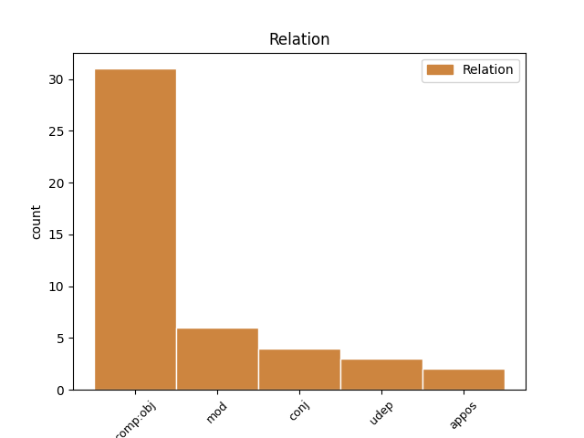
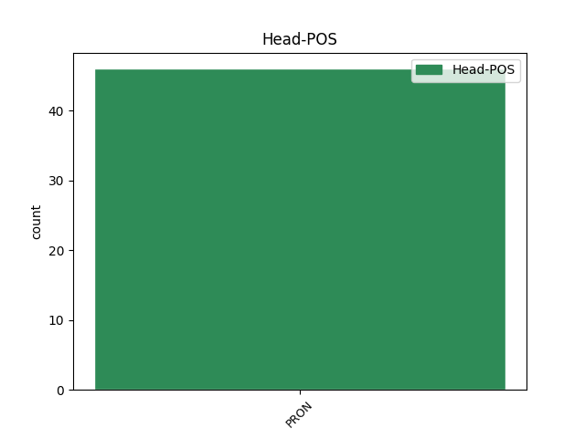
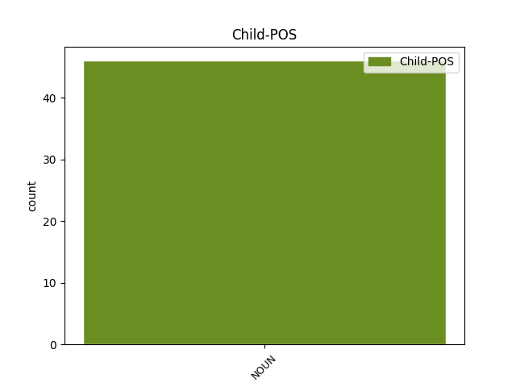

Distribution of features within this leaf



Agreement Rules sorted by frequency.
- When the dependent token is the direct object complements(comp:obj) of the head token, and the head token is PRON and the dependent token is NOUN.
1 Han _ _ _ _ 0 _ _ _
2 får _ _ _ _ 0 _ _ _
3 medicin _ _ _ _ 0 _ _ _
4 for _ _ _ _ 0 _ _ _
5 sin _ _ _ _ 0 _ _ _
6 sukkersyge _ _ _ _ 0 _ _ _
7 og _ _ _ _ 0 _ _ _
8 kredsløbsforstyrrelser _ _ _ _ 0 _ _ _
9 og _ _ _ _ 0 _ _ _
10 forsyner _ _ _ _ 0 _ _ _
11 os _ _ _ _ 0 _ _ _
12 hver hver PRON _ Gender=Com|Number=Sing|PronType=Ind 0 _ _ _
13 gang gang NOUN _ Definite=Ind|Gender=Com|Number=Sing 12 comp:obj _ _
14 med _ _ _ _ 0 _ _ _
15 lange _ _ _ _ 0 _ _ _
16 indkøbslister _ _ _ _ 0 _ _ _
17 om _ _ _ _ 0 _ _ _
18 aviser _ _ _ _ 0 _ _ _
19 , _ _ _ _ 0 _ _ _
20 cigaretter _ _ _ _ 0 _ _ _
21 og _ _ _ _ 0 _ _ _
22 fødevarer _ _ _ _ 0 _ _ _
23 , _ _ _ _ 0 _ _ _
24 " _ _ _ _ 0 _ _ _
25 oplyser _ _ _ _ 0 _ _ _
26 den _ _ _ _ 0 _ _ _
27 danske _ _ _ _ 0 _ _ _
28 charge-d'affairs _ _ _ _ 0 _ _ _
29 Joachim _ _ _ _ 0 _ _ _
30 Rehder _ _ _ _ 0 _ _ _
31 til _ _ _ _ 0 _ _ _
32 B.T. _ _ _ _ 0 _ _ _
33 . _ _ _ _ 0 _ _ _
1 Nu _ _ _ _ 0 _ _ _
2 og _ _ _ _ 0 _ _ _
3 da _ _ _ _ 0 _ _ _
4 brød _ _ _ _ 0 _ _ _
5 en _ _ _ _ 0 _ _ _
6 mandlig _ _ _ _ 0 _ _ _
7 speaker _ _ _ _ 0 _ _ _
8 ind _ _ _ _ 0 _ _ _
9 , _ _ _ _ 0 _ _ _
10 helt _ _ _ _ 0 _ _ _
11 eksalteret _ _ _ _ 0 _ _ _
12 : _ _ _ _ 0 _ _ _
13 " _ _ _ _ 0 _ _ _
14 Det det PRON _ Case=Acc|Gender=Neut|Number=Sing|Person=3|PronType=Prs 0 _ _ _
15 tyske _ _ _ _ 0 _ _ _
16 folk folk NOUN _ Definite=Ind|Gender=Neut|Number=Sing 14 mod _ SpaceAfter=No
17 ! _ _ _ _ 0 _ _ _
18 Forbered _ _ _ _ 0 _ _ _
19 jer _ _ _ _ 0 _ _ _
20 på _ _ _ _ 0 _ _ _
21 en _ _ _ _ 0 _ _ _
22 vigtig _ _ _ _ 0 _ _ _
23 meddelelse _ _ _ _ 0 _ _ _
24 ! _ _ _ _ 0 _ _ _
25 " _ _ _ _ 0 _ _ _
1 Alle _ _ _ _ 0 _ _ _
2 socialinspektører _ _ _ _ 0 _ _ _
3 har _ _ _ _ 0 _ _ _
4 siden _ _ _ _ 0 _ _ _
5 lovens _ _ _ _ 0 _ _ _
6 vedtagelse _ _ _ _ 0 _ _ _
7 trøstet _ _ _ _ 0 _ _ _
8 os _ _ _ _ 0 _ _ _
9 med _ _ _ _ 0 _ _ _
10 , _ _ _ _ 0 _ _ _
11 at _ _ _ _ 0 _ _ _
12 kun _ _ _ _ 0 _ _ _
13 hver hver PRON _ Gender=Com|Number=Sing|PronType=Ind 0 _ _ _
14 tiende _ _ _ _ 0 _ _ _
15 husstand husstand NOUN _ Definite=Ind|Gender=Com|Number=Sing 13 udep _ _
16 rammes _ _ _ _ 0 _ _ _
17 af _ _ _ _ 0 _ _ _
18 den _ _ _ _ 0 _ _ _
19 . _ _ _ _ 0 _ _ _
1 Og _ _ _ _ 0 _ _ _
2 han _ _ _ _ 0 _ _ _
3 har _ _ _ _ 0 _ _ _
4 indset _ _ _ _ 0 _ _ _
5 , _ _ _ _ 0 _ _ _
6 at _ _ _ _ 0 _ _ _
7 den _ _ _ _ 0 _ _ _
8 bliver _ _ _ _ 0 _ _ _
9 endnu _ _ _ _ 0 _ _ _
10 kortere _ _ _ _ 0 _ _ _
11 , _ _ _ _ 0 _ _ _
12 når _ _ _ _ 0 _ _ _
13 han han PRON _ Case=Nom|Gender=Com|Number=Sing|Person=3|PronType=Prs 0 _ _ _
14 og _ _ _ _ 0 _ _ _
15 kæresten kæreste NOUN _ Definite=Def|Gender=Com|Number=Sing 13 conj _ _
16 Cecilie _ _ _ _ 0 _ _ _
17 Olrik _ _ _ _ 0 _ _ _
18 til _ _ _ _ 0 _ _ _
19 marts _ _ _ _ 0 _ _ _
20 bliver _ _ _ _ 0 _ _ _
21 forældre _ _ _ _ 0 _ _ _
22 . _ _ _ _ 0 _ _ _
1 Ejendomsselskabet _ _ _ _ 0 _ _ _
2 Norden _ _ _ _ 0 _ _ _
3 ønsker _ _ _ _ 0 _ _ _
4 at _ _ _ _ 0 _ _ _
5 vokse _ _ _ _ 0 _ _ _
6 sig _ _ _ _ 0 _ _ _
7 endnu _ _ _ _ 0 _ _ _
8 større _ _ _ _ 0 _ _ _
9 , _ _ _ _ 0 _ _ _
10 end _ _ _ _ 0 _ _ _
11 det _ _ _ _ 0 _ _ _
12 bliver _ _ _ _ 0 _ _ _
13 efter _ _ _ _ 0 _ _ _
14 fusionen _ _ _ _ 0 _ _ _
15 med _ _ _ _ 0 _ _ _
16 et en PRON _ Gender=Neut|Number=Sing|PronType=Ind 0 _ _ _
17 af _ _ _ _ 0 _ _ _
18 Hafnia-koncernens _ _ _ _ 0 _ _ _
19 selskaber _ _ _ _ 0 _ _ _
20 , _ _ _ _ 0 _ _ _
21 Aktieselskabet aktieselskab NOUN _ Definite=Def|Gender=Neut|Number=Sing 16 appos _ _
22 af _ _ _ _ 0 _ _ _
23 15. _ _ _ _ 0 _ _ _
24 april _ _ _ _ 0 _ _ _
25 1980 _ _ _ _ 0 _ _ _
26 . _ _ _ _ 0 _ _ _
Disagree Examples:
1 Lever _ _ _ _ 0 _ _ _
2 og _ _ _ _ 0 _ _ _
3 er _ _ _ _ 0 _ _ _
4 vi vi PRON _ Case=Nom|Gender=Com|Number=Plur|Person=1|PronType=Prs 0 _ _ _
5 mennesker menneske NOUN _ Definite=Ind|Gender=Neut|Number=Plur 4 mod _ _
6 virkelig _ _ _ _ 0 _ _ _
7 sådan _ _ _ _ 0 _ _ _
8 ? _ _ _ _ 0 _ _ _
1 - _ _ _ _ 0 _ _ _
2 Her _ _ _ _ 0 _ _ _
3 går _ _ _ _ 0 _ _ _
4 vi vi PRON _ Case=Nom|Gender=Com|Number=Plur|Person=1|PronType=Prs 0 _ _ _
5 to _ _ _ _ 0 _ _ _
6 mennesker menneske NOUN _ Definite=Ind|Gender=Neut|Number=Plur 4 mod _ _
7 midt _ _ _ _ 0 _ _ _
8 om _ _ _ _ 0 _ _ _
9 natten _ _ _ _ 0 _ _ _
10 og _ _ _ _ 0 _ _ _
11 undskylder _ _ _ _ 0 _ _ _
12 os _ _ _ _ 0 _ _ _
13 , _ _ _ _ 0 _ _ _
14 som _ _ _ _ 0 _ _ _
15 om _ _ _ _ 0 _ _ _
16 det _ _ _ _ 0 _ _ _
17 er _ _ _ _ 0 _ _ _
18 hemmeligt _ _ _ _ 0 _ _ _
19 og _ _ _ _ 0 _ _ _
20 forbudt _ _ _ _ 0 _ _ _
21 , _ _ _ _ 0 _ _ _
22 det _ _ _ _ 0 _ _ _
23 vi _ _ _ _ 0 _ _ _
24 gør _ _ _ _ 0 _ _ _
25 . _ _ _ _ 0 _ _ _
1 Så _ _ _ _ 0 _ _ _
2 lang _ _ _ _ 0 _ _ _
3 tid _ _ _ _ 0 _ _ _
4 kommer _ _ _ _ 0 _ _ _
5 det _ _ _ _ 0 _ _ _
6 ikke _ _ _ _ 0 _ _ _
7 til _ _ _ _ 0 _ _ _
8 at _ _ _ _ 0 _ _ _
9 tage _ _ _ _ 0 _ _ _
10 denne _ _ _ _ 0 _ _ _
11 gang _ _ _ _ 0 _ _ _
12 , _ _ _ _ 0 _ _ _
13 men _ _ _ _ 0 _ _ _
14 jeg jeg PRON _ Case=Nom|Gender=Com|Number=Sing|Person=1|PronType=Prs 0 _ _ _
15 og _ _ _ _ 0 _ _ _
16 bandet band NOUN _ Definite=Def|Gender=Neut|Number=Sing 14 conj _ _
17 skal _ _ _ _ 0 _ _ _
18 lige _ _ _ _ 0 _ _ _
19 have _ _ _ _ 0 _ _ _
20 tid _ _ _ _ 0 _ _ _
21 til _ _ _ _ 0 _ _ _
22 at _ _ _ _ 0 _ _ _
23 finde _ _ _ _ 0 _ _ _
24 vores _ _ _ _ 0 _ _ _
25 musikalske _ _ _ _ 0 _ _ _
26 ståsted _ _ _ _ 0 _ _ _
27 , _ _ _ _ 0 _ _ _
28 " _ _ _ _ 0 _ _ _
29 siger _ _ _ _ 0 _ _ _
30 Ian _ _ _ _ 0 _ _ _
31 Gillan _ _ _ _ 0 _ _ _
32 . _ _ _ _ 0 _ _ _